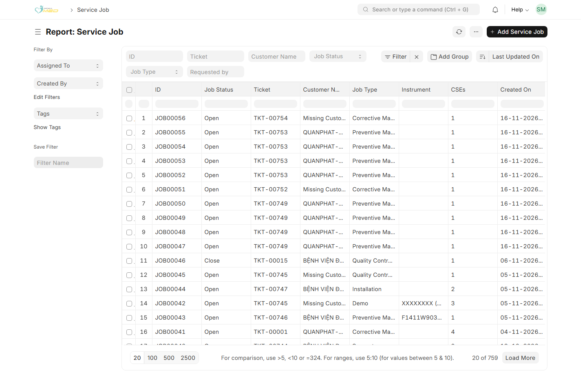
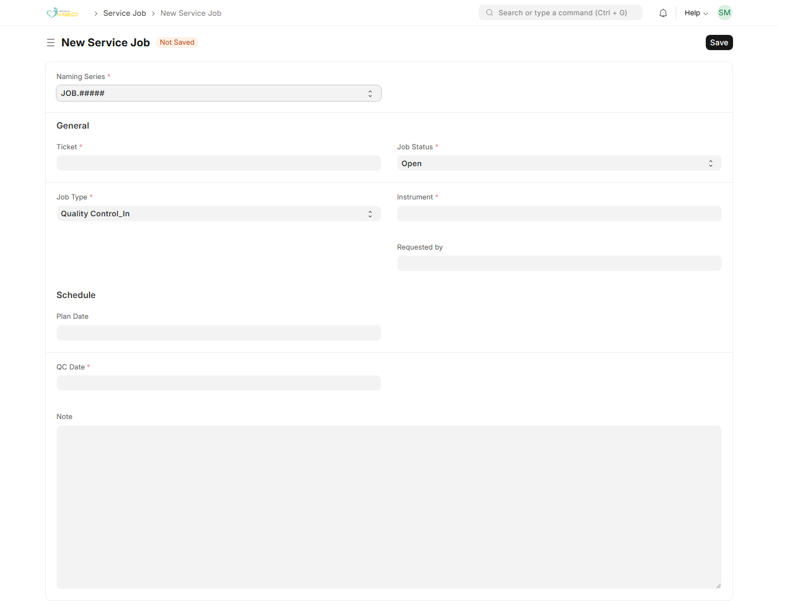
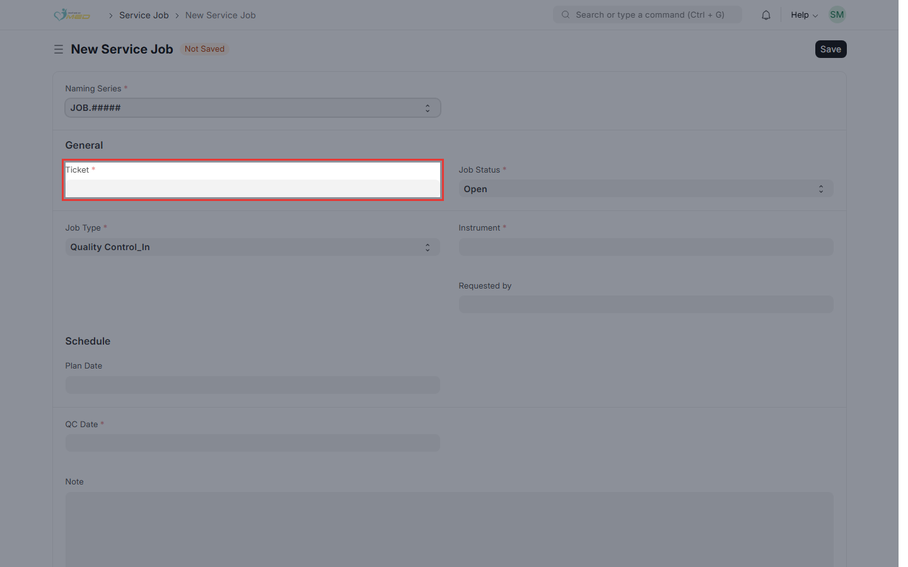
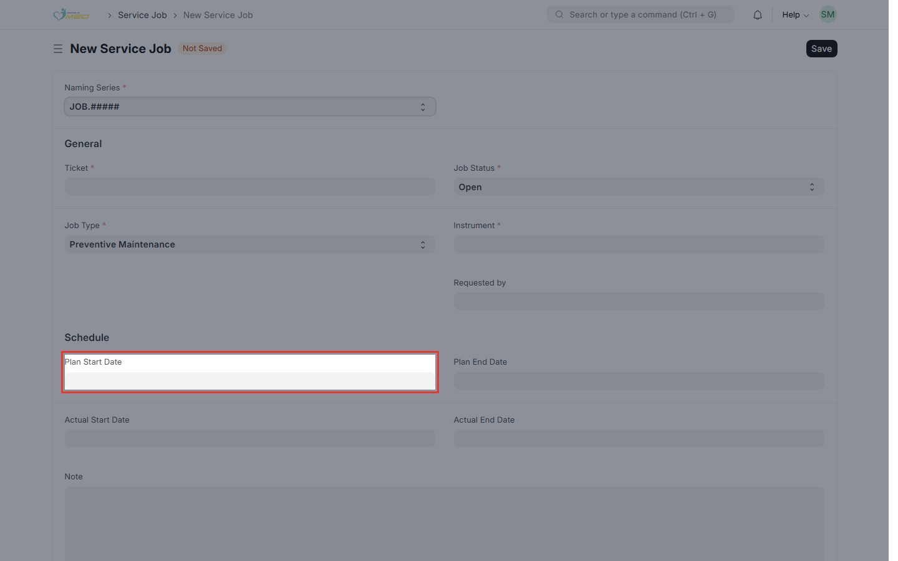

2. Tạo Service Job
Ai thực hiện: Manager và Leader — tạo/sửa/xóa mọi Service Job. Service User — được tạo job mới và sửa/xóa job khi bạn nằm trong CSEs của job đó (chi tiết).
Mỗi job là một công việc cụ thể (QC, bảo trì, hỗ trợ, …) thuộc cùng Ticket. Có thể tạo nhiều job cho một Ticket.
Bước 2.1 — Mở form Service Job
Tìm Service Job trên Desk → + Add Service Job. Hoặc từ Ticket đã lưu: Connections → Service Job → +.


Bước 2.2 — Gắn Ticket và thông tin chung
- Ticket (bắt buộc với hầu hết loại job, gồm PM) — chọn Ticket. Ngoại lệ CM mới không ticket — xem hộp trên.
- Customer — chọn một khách hàng trong danh sách Customers của Ticket (bắt buộc). Nếu ticket chỉ có một khách hàng, hệ thống có thể tự điền.
- Job Status — thường Open khi bắt đầu; chuyển Close khi hoàn tất (Trưởng nhóm / Quản lý dịch vụ, hoặc kỹ sư CSE được giao trên job).
- Job Type — loại công việc (QC, PM, CM, Support, …).
- Requested by — tùy chọn; người yêu cầu (Sales / Sales Manager / Sales Leader hoặc BU Manager); chỉ chọn được user thuộc các vai trò đó.
- Instrument — thiết bị liên quan (nếu có).
- CSEs — chỉ hiện sau khi chọn Ticket. Danh sách gợi ý chỉ gồm CSE đã khai trên Ticket; không thể chọn kỹ sư ngoài ticket.

Bước 2.3 — Khối Schedule (theo Job Type)
Service Job dùng bốn ô ngày chung trong khối Schedule. Khi đổi Job Type, hệ thống đổi nhãn, ẩn hoặc bắt buộc từng ô cho đúng loại công việc (ví dụ QC chỉ còn Plan Date + QC Date; lắp đặt chỉ Start/End thực tế).
Tóm tắt theo loại (nhãn trên form):
| Job Type | Schedule trên form | Ghi chú |
|---|---|---|
| Preventive Maintenance | Plan Start / Plan End; hàng 2: Actual Start / Actual End | Plan phải trong phạm vi Ticket (nếu Ticket có đủ hai ngày plan) |
| Corrective Maintenance | 1st On Site Arrival · On Site Repair | Hai mốc nằm trong Schedule (Actual); không còn ô ngày riêng trong Details |
| Update | Deadline for Update · Update Completed Date | Completed Date thường bắt buộc khi lưu |
| Quality Control In/Out, Demo, Meeting… | Cặp Plan Date + ngày thực hiện (QC Date, Demo Date, …) | Không ràng plan theo Ticket |
| Installation, Training, Site Survey, Support | Chủ yếu Start / End thực tế (hoặc Support Start/End) | Một số loại bắt buộc đủ Start (và End tùy loại) |
Khi điền cả hai ngày “plan” đang hiển thị: ngày kết thúc không được sớm hơn ngày bắt đầu. Tương tự với cặp Actual khi cả hai đều hiện và có giá trị.

Sau khi đổi Job Type, nếu layout Schedule lệch, làm mới trình duyệt (Ctrl+Shift+R), đặc biệt sau khi admin vừa cập nhật app.
Bước 2.4 — Chi tiết CM, Update & lưu
Điền khối Details theo Job Type (liên kết QC / Installation Note / Maintenance Visit, loại Support, …).
- Corrective Maintenance — Problem Description (một dòng); hàng 2: Breakdown Date và System Condition; hàng 3: CM Support Type / Resolution Type; hàng 4: Support Long Text / Resolution Long Text. Ngày đến / sửa tại site: dùng Schedule (1st On Site Arrival, On Site Repair).
- Update — thêm Update Number và Update Description (mô tả bản cập nhật); deadline và ngày hoàn tất ở Schedule.
- Các loại khác — giữ quy tắc liên kết bảo trì/QC như trước; thời gian ghi ở Schedule, không tách field ngày lẻ trong Details.
Nhấn Save.